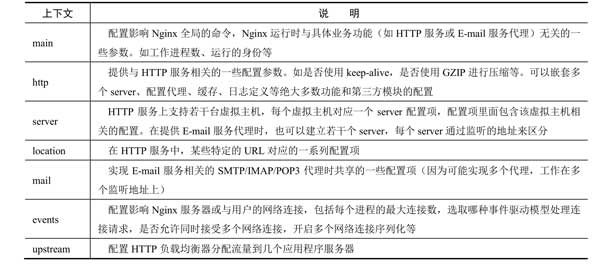
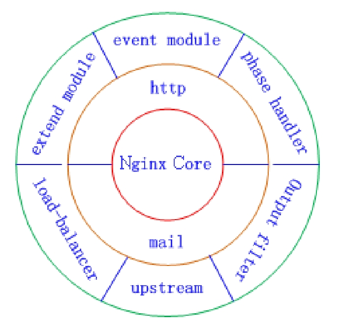
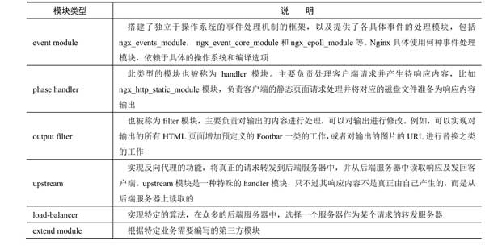

基本选项
nginx -h打印出的内容几乎已经告诉我们如何使用nginx：Options:
-?,-h : this help
-v : show version and exit
-V : show version and configure options then exit
-t : test configuration and exit
-T : test configuration, dump it and exit
-q : suppress non-error messages during configuration testing
-s signal : send signal to a master process: stop, quit, reopen, reload
-p prefix : set prefix path (default: /usr/local/nginx/)
-c filename : set configuration file (default: /usr/local/nginx/nginx.conf)
-g directives : set global directives out of configuration file
工作模式
使用ps -ef | grep nginx查看nginx的进程：root 19997 1 0 14:02 ? 00:00:00 nginx: mas
nobody 19998 19997 0 14:02 ? 00:00:00 nginx: wor
tedis 20195 19881 0 14:05 tty3 00:00:00 grep --color=auto --exclude-dir=.bzr --exclude-dir=CVS --exclude-dir=.git --exclude-dir=.hg --exclude-dir=.svn --exclude-dir=.idea --exclude-dir=.tox nginxm和w分别是master process和worker process。nginx采用一主多从，主进程读取和评估配置，维护工作进程。工作进程处理请求。
配置文件
编译阶段用./configure --conf-path=PATH可以指定nginx的默认配置路径，如果编译后想指定用某个配置文件启动，可以用nginx -t path/to/nginx.config启动，不加改参数则使用默认的配置文件路径
使用nginx -t可以检测配置文件的合法性，使用nginx -c -t可以检测某个特定配置文件的合法性，可以在启动nginx之前使用此命令测试一次。
nginx.conf是主配置文件，所有的时候启动都会被用到，而安装目录下的conf文件夹中还有辅助配置文件，他们只有在部分条件先被调用。
nginx.conf
nginx.conf中的命令分为简单命令和块命令
简单命令由构成为：command args ... ;，一个命令，多个参数，空格相隔，分号结尾。例如：error_log logs/error.log info中error_log是命令名称，参数1是logs/error.log指明日志位置，参数2info说明日志的级别。
块命令是一个大括号，里面有多个简单命令。一个块中的其他命令称之为上下文。例如：location / {
root html;
index index.html index.htm;
}

上下文可以相互嵌套并重复（如果配置了多个虚拟服务器，那么http中就会出现多个server）
配置文件中用#作为注释。
配置文件中使用$引用变量，用set var_name value来自定义变量。例如：set $a "hello world"。变量可以在字符串中被解引用，实现字符串拼接：set $b = "$a,$a"，此时$b就是”hello world,hello world”
启动与关闭
启动
直接启动：sudo nginx
指定文件启动：sudo nginx -c /usr/local/nginx/conf/nginx.conf
使用service管理启动：sudo service nginx start
停止
nginx的停止分为3种，从容停止，快速停止和强制停止。用ps -ef | grep nginx可以查看nginx主进程号，接下来操作的进程都是针对主进程，通过不同的信号来关闭nginx：
- 快速停止：
sudo kill -TERM <pid>或sudo kill -INT <pid> - 从容停止：
sudo kill -QUIT <pid>，会处理完请求后关闭 - 强制停止：
sudo kill -KILL <pid>
也可以sudo service nginx stop或sudo nginx -s stop
重启
sudo kill -HUP <pid>或sudo nginx -s reload
主进程接收到重启信号后，会检测配置文件合法性，失败回滚，成功则创建新的工作进程，并通知旧的工作进程关闭。运行中的工作进程收到关闭的命令会停止接受新的链接，并继续处理当前已接受的请求，直到没有请求后再退出。
更新版本 与 恢复版本
当nginx需要添加新的模块时，需要重新编译。
- 对于手动安装的nginx，将新版本的nginx编译安装到旧版本的安装路径中，让新版本的可执行文件替换旧版本的可执行文件。
- 执行
sudo kill -USR2 <pid>，然后nginx会启动新的主进程，并重命名nginx.pid到nginx.pid.oldbin，原有的nginx.pid会被新的主进程占用。此时出现两个主进程同时运行的情况，并且存在两批新旧工作进程，他们会同时工作，共同处理请求。nginx热启动的详细原理可以看：nginx平滑启动原理：USR1和USR2型号的区别 - 此时还需要停止旧的进程，就要发送
WINCH信号给旧的主进程：sudo kill -WINCH path/to/nginx.pid.oldbin，他的进程会被从容关闭。当旧进程处理完已有的链接后会自动退出，仅剩新进程处理输入请求。 - 当新的版本启动后，新版本有问题，可以恢复为旧版本：
- 执行上述操作后，旧版本不会关闭其Listen Socket，并可以管理他，用
sudo kill -HUP <old pid>将会不在重载入配置文件的情况下启动旧版的工作进程。 - 用
sudo kill -QUIT <new pid>杀掉新版本主进程号，如果出现了问题不能退出，则相继使用TERM和KILL信号强制退出。新版本退出后，旧版本主进程文件会被移除.oldbin后缀，回复.pid后缀，一切将恢复到升级前。
总结
linux的信号机制对nginx的操作主要如下：
| 信号 | 说明 |
| —— | —— |
| TERM/INT | 快速关闭 |
| QUIT | 优雅的关闭进程,即等请求结束后再关闭 |
| HUP | 改变配置文件,平滑的重读配置文件 |
| USR1 | 重读日志,在日志按月/日分割时有用 |
| USR2 | 平滑的升级 |
| WINCH | 优雅关闭旧的进程(配合USR2来进行升级) |
模块化
nginx将各个模块组织成一个链条吗，当有请求到达时经过链条上的部分或者全部模块，然后进行处理，每个模块实现特定功能。

nginx core实现了底层的通信协议，为其他模块和nginx进程构建基本运行环境，并构建了其他模块的协作基础。http和mail模块位于中间层，实现HTTP和Mail协议(SMTP/IMAP/POP3)。
nginx模块根据功能可以分为六类：、
